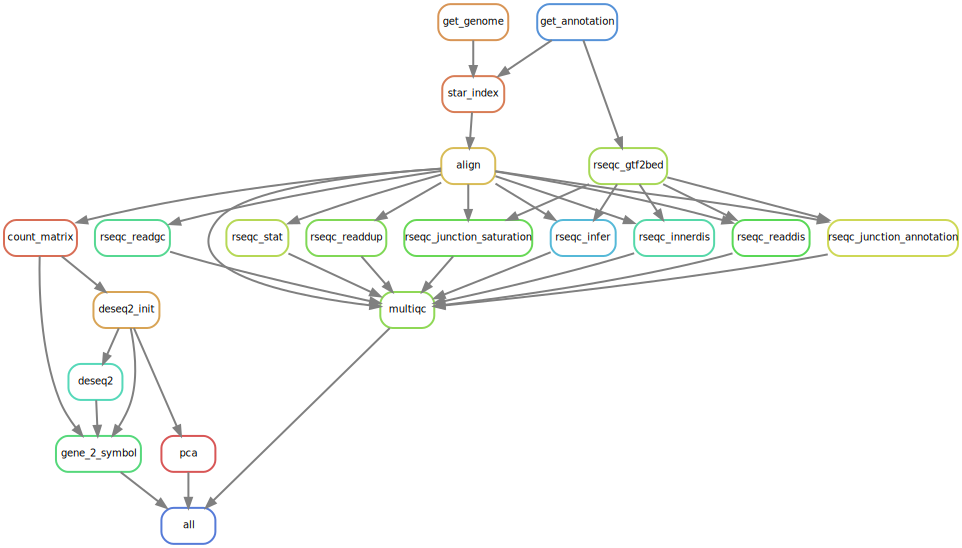

Skip to main content
Multi-Omics Project Workflows
Show table of contents
Table of contents
Quick Glimpse
GENERAL OVERVIEW
1
Summary
GENE EXPRESSION
2
STAR Differentially Expressed Genes
VARIANT ANALYSIS
3
Variant calling
SPLICE JUNCTIONS
4
Splicing ….
MICROBIOME ANALYSIS
5
OTU Profiling
MACHINE LEARNING
6
Microbiome Machine Learning Model
APPENDIX
A
Workflow Templates 1
B
Snakemake Workflow Templates 2
C
Snakemake Workflow Templates 3
D
Snakemake Workflow Templates 4
E
Snakemake Workflow Templates 5
References
2
STAR Differentially Expressed Genes

1
Summary
3
Variant calling
On this page
2
STAR Differentially Expressed Genes
View source
Edit this page